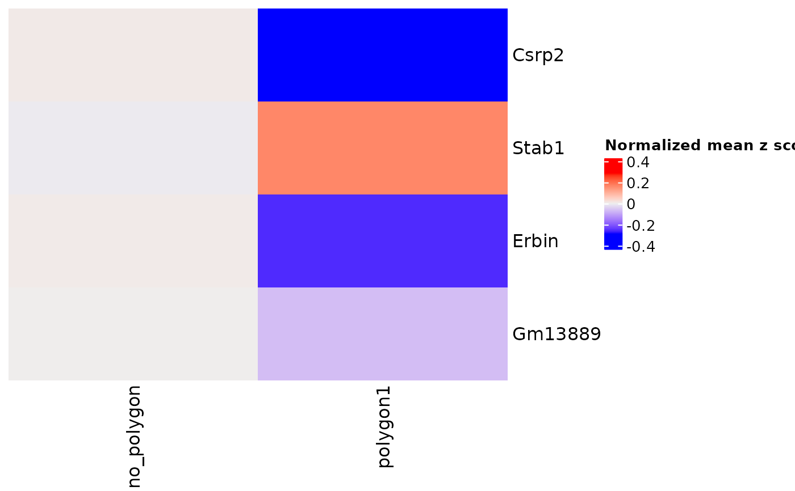

Compare gene expression between polygon areas
comparePolygonExpression(
gobject,
polygon_name = "selections",
spat_unit = "cell",
feat_type = "rna",
selected_feats = "top_genes",
expression_values = "normalized",
method = "scran",
...
)A Giotto object
name of polygon selections
spatial unit (e.g. "cell")
feature type (e.g. "rna", "dna", "protein")
vector of selected features to plot
gene expression values to use ("normalized", "scaled", "custom")
method to use to detect differentially expressed feats ("scran", "gini", "mast")
Arguments passed to Heatmap
A ComplexHeatmap::Heatmap object
## Plot interactive polygons
g <- GiottoData::loadGiottoMini("visium")
#> 1. read Giotto object
#> 2. read Giotto feature information
#> 3. read Giotto spatial information
#> 3.1 read Giotto spatial shape information
#> 3.2 read Giotto spatial centroid information
#> 3.3 read Giotto spatial overlap information
#> 4. read Giotto image information
#>
#> checking default envname 'giotto_env'
#> a system default python environment was found
#> Using python path:
#> "/usr/bin/python3"
my_polygon_coords <- data.frame(
poly_ID = rep("polygon1", 3),
sdimx = c(5477, 5959, 4720), sdimy = c(-4125, -2808, -5202)
)
## Add polygon coordinates to Giotto object
my_giotto_polygons <- createGiottoPolygonsFromDfr(my_polygon_coords,
name = "selections"
)
#> Selecting col "poly_ID" as poly_ID column
#> Selecting cols "sdimx" and "sdimy" as x and y respectively
g <- addGiottoPolygons(
gobject = g,
gpolygons = list(my_giotto_polygons)
)
## Add polygon cells
g <- addPolygonCells(g)
#>
#> These column names were already used: in_tissue nr_feats perc_feats total_expr
#> leiden_clus custom_leiden
#> and will be overwritten
comparePolygonExpression(g)
#> using 'Scran' to detect marker feats. If used in published
#> research, please cite: Lun ATL, McCarthy DJ, Marioni JC (2016).
#> 'A step-by-step workflow for low-level analysis of single-cell RNA-seq
#> data with Bioconductor.'
#> F1000Res., 5, 2122. doi: 10.12688/f1000research.9501.2.
#> start with cluster no_polygonstart with cluster polygon1
